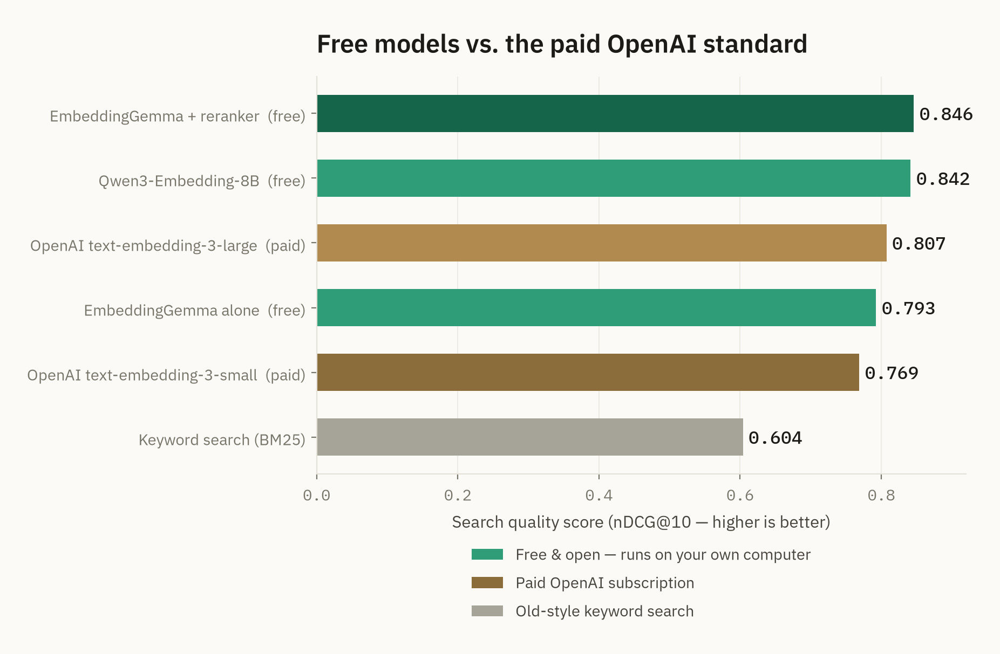
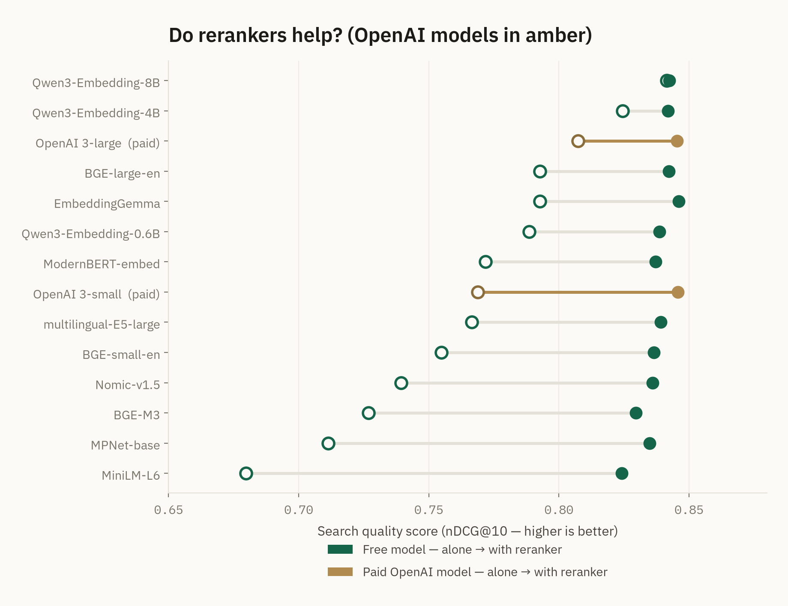
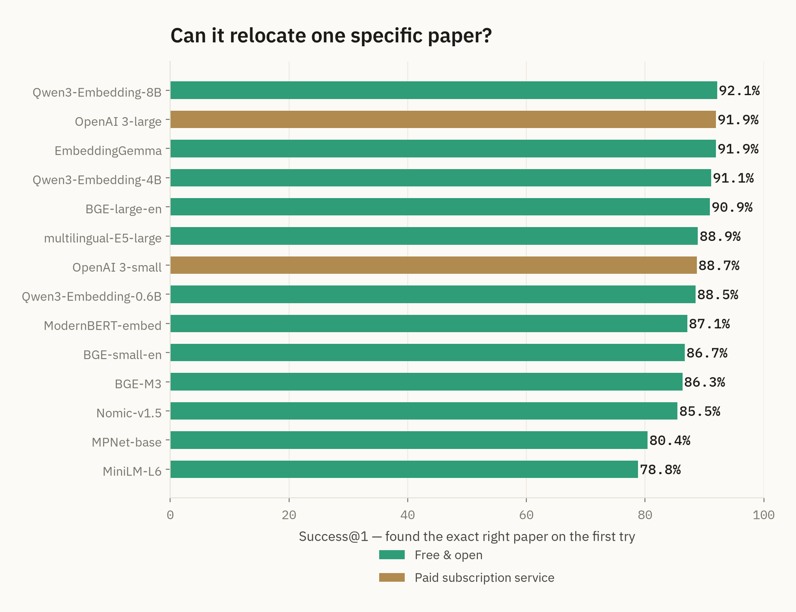

What is an embedding?
An embedding is a list of numbers that stands in for a piece of text. A model reads a passage — a title, an abstract, a question — and returns a fixed-length vector: a single point in a high-dimensional space.
The useful part is where those points land. Two passages about the same idea sit close together, even when they share no words. Two unrelated passages sit far apart. Meaning becomes distance — and distance is something a computer can measure instantly.
A search for kinship care lands next to a paper that only ever wrote relative caregivers — because the two phrases mean the same thing, the model puts them in the same neighborhood.
Keyword search matches strings. Embeddings match meaning.
Keyword search finds kinship care only where those exact words appear. It misses every paper that wrote relative caregivers, grandparents raising grandchildren, or informal placement — different words for the same subject. An embedding search surfaces all of them from a single query, because it is comparing meaning rather than spelling.
Search by meaning
Retrieve everything on a topic across decades of writing, robust to changing vocabulary and jargon.
Cluster and map
Group documents by theme automatically, and see the shape of a literature without reading every entry.
Feed an AI assistant
Embeddings are how a language model finds the right passages to ground an answer — the retrieval half of retrieval-augmented generation.
Find duplicates and near-matches
Detect records that say the same thing in different words — deduplication that string matching cannot do.
Does the expensive option actually win?
Choosing an embedding model is usually done by reputation: reach for the best-known commercial API and move on. We wanted evidence instead.
Fourteen candidate models were benchmarked on the real corpus — 64,956 social work research records — pitting twelve open-weight models you can download and run locally against two commercial embedding services, OpenAI's text-embedding-3 family.
The measure was retrieval quality: given a query, how well does each model surface the genuinely relevant records? The results were consistent — and not what reputation predicts.
Small and free held its own — and then some

Both free configurations shown here outscore both paid OpenAI tiers — and every embedding model tested, free or paid, clears the keyword-search baseline by a wide margin.
Embeddings beat keywords, every time
Even the weakest embedding model retrieved more relevant work than keyword matching. For search by meaning, this is table stakes.
Open matched or beat commercial
Open-weight models you can run on your own hardware equalled — and in cases exceeded — the paid commercial embedding APIs on this literature.
A 300M model won on value
EmbeddingGemma — 300 million parameters, small enough to run on a laptop — offered the strongest quality-to-size ratio of everything tested.
Findings from the SWRD v2 retrieval benchmark (manuscript currently under review). Results are specific to retrieval on research-abstract text; your corpus may differ — which is exactly why testing beats reputation.

A reranker rescues weak models — including OpenAI's own — but adds almost nothing once a model is already strong.

For relocating a specific known paper, nearly every model — free or paid — performs well; the free leader edges out the paid flagship here too.
Local and open vs. a commercial API
Once retrieval quality is comparable, the decision comes down to everything else — cost, privacy, and control. That is where the two approaches diverge sharply.
Model specifications are the providers' published figures. Quality claims reflect this corpus benchmark, not a universal ranking.
When quality is even, the free option wins on everything else
Make the paid API earn its place
For most teams searching their own documents, a small open embedding model is the right default: it costs nothing, keeps your text private, and — on the evidence here — retrieves at least as well as the popular commercial service. Reach for a paid API when you have a concrete reason to, not out of habit.
And whatever you choose, test it on your own text. Reputation is a poor substitute for a benchmark on the data you actually have.
This report accompanies the SW-Embedding-Test repository, where the full test collection, evaluation code, and results are openly available.